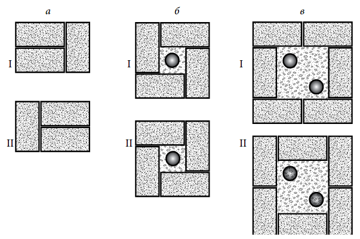
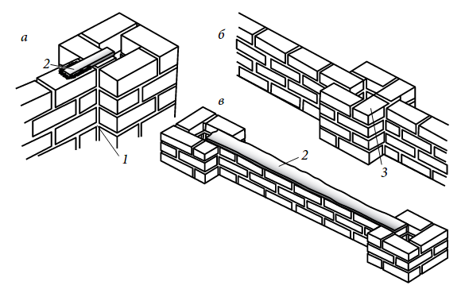

БУДІВНИЦТВО КОЛОН І СТОВПІВ
Мінімальна глибина фундаменту для цегляної колони (стовпа) становить 200 мм, проте в залежності від її висоти або навантаження глибина може доходити до 600 мм і більше. Крім того, в конструкцію цегляних колон і стовпів рекомендується вводити підсилюючі вертикальні арматурні стрижні. Особливо це стосується опор, які несуть значне навантаження, — наприклад, тих, на які навішують ворота.
По центру фундаменту встановлюють один або кілька металевих стрижнів і утримують їх дерев'яними підкосами до тих пір, поки бетонна суміш не застигне. Потім навколо стрижнів викладають цеглини, а центральну частину по мірі просування роботи заповнюють будівельним розчином. Якщо стовпи високі, то арматуру потрібної довжини складно зафіксувати в стынущем бетоні фундаменту. В такому випадку, як говорилося вище, в майданчик замуровують початковий прут, який виступає з бетону на півметра, а потім уже до нього примотують оцинкованої дротом арматуру.
Для кладки окремо стоять стовпів краще використовувати парне кількість цеглин, незалежно від того, є вони суцільними або порожнистими всередині, і робити кладку квадратного перерізу. Простеночные або кінцеві стовпи можуть мати непарну кількість цегли у рядку. Наприклад, при кладці стін вполкирпича розповсюдження отримали стовпи, викладені з трьох цеглин.
На малюнку представлені схеми кладки цегли для різних колон і стовпів. Вибравши товщину стовпа, що один ряд цеглин укладають за зразком I, наступний — за зразком II, і так, чергуючи ряди, ведуть кладку до досягнення необхідної висоти. В цьому випадку виходить надійна перев'язка.
Надзвичайно важливо забезпечити, щоб всі чотири кута стовпа були під кутом 90° один до одного. Після того як викладений перший ряд, перевіряють кути будівельним косинцем. Під час подальшої роботи слід періодично перевіряти висоту з допомогою рядовки і використовувати будівельний рівень і висок для кожного ряду.
Коли будуть укладені кілька нижніх рядів, в порожнину стовпа, заповнену ще вологим розчином, вставляють арматурний прут. Верхня частина прута повинна доходити до останнього рівня стіни і стовпа. Оскільки стовп невисокий, початковий прут використовувати не обов'язково. Але для того, щоб арматура не впала і з нею можна було продовжувати працювати, її підпирають підкосами, в якості яких використовують відрізки дерев'яних брусків.
 Схеми виконання перев'язки швів при будівництві цегляних стовпів: а — в півтора цегли без армування; б — в півтора цегли з арматурним прутом; в — у дві цегли з двома прутами арматури: І , ІІ — чергуються ряди цегляної кладки
Верхню частину цегляних стовпів потрібно обов'язково оберігати від впливу атмосферних опадів. Для цього їх або закривають ковпаками, виготовленими за всіма правилами покрівельної технології, або облицьовують бетонними плитами, або просто штукатурять цементним розчином.
Процес створення цегляного стовпа для забору розглянемо на невеликому прикладі. Отже, щоб побудувати порожній стовпчик з чотирма цеглою в одному ряду висотою 900 мм (крім нижній ряд з клінкерних цегли), з фундаментом 600 × 400 і глибиною 110 мм, знадобляться наступні матеріали: — для фундаменту: 10 кг цементу, 25 кг піску і 40 кг заповнювача (щебеню);— для цегляної кладки: 50 керамічних цегли; 5 клінкерних цегли; 10 кг цементу; 40 кг будівельного піску; 5 кг вапна або 10 мл пластифікатора; металевий арматурний прут довжиною близько 1 м; — для штукатурки: 8 кг цементу; 48 кг будівельного піску; 4 кг вапна або 8 мл пластифікатора. Для будівництва окремо стовпа необхідно вийняти грунт під фундамент зазначених розмірів. Якщо цей стовп прилаштовується до стіни і повинен бути побудований одночасно з нею, фундамент потрібно укласти заздалегідь, щоб він міг просохнути. Перед початком кладки викладіть перший ряд цегли без розчину. Перевірте, як будуть перев'язуватися ряди стовпа і стіни. Не забудьте, що в прольоті огорожі з двома стовпами перев'язується тільки один з них, а у другого створюється температурний шов. Після цього можна приступати до будівництва стовпа, використовуючи розчин.
 Зєднання стовпів з цегляною стіною: а — деформаційний або контрольний шов з посиленням металевої пластиною; б — перев'язка кладки стовпа зі стіною товщиною вполкирпича; в — посилення з'єднання між стовпом і довгою стіною металевою смугою: 1 — температурний шов (без розчину); 2 — металева смуга; 3 — три чверті цегли
Для простеночных стовпів, що входять до складу стіни або стоять біля неї в якості опор, є вибір: або перев'язка кладки стовпа з системою перев'язки стіни, або колка цеглин навпіл і на три частини перемежованих рядах кладки, щоб залишити верти - кальний шов по краях стовпа і потім посилювати горизонтальні ряди з допомогою металевих анкерних або стінових стяжок (рис. 37, б , в ). У разі якщо вертикальний шов залишається не забитим, пе - суспільство в тому, що його можна використовувати як деформаційний або температурний шов (його ще називають компенсаційним зазором) для довгих стін. Це вертикальна щілина, що розділяє фундамент і прольоти на окремі фрагменти. Будівельний розчин у верти - кальном шві, який проходить по повній висоті стіни, відсутня. Це дозволяє стіні розширюватися і стискатися вздовж всієї довжини прольоту, запобігаючи розтріскування паркану при змінах температури. Щоб утримувати стіну в напрямку горизонтального прогину, у неї наполовину вмазують плоску металеву оцинковану смугу, інша половина якої розташована в кладці стовпа (рис. 37, а ). Краї інших відкритих вертикальних швів заповнюють нетвер - деющей мастикою. Краще всього створювати такі шви у простеночных стовпах. Рас - вважати їх слід приблизно через кожні 6 м, але не рідше ніж через 10 м.